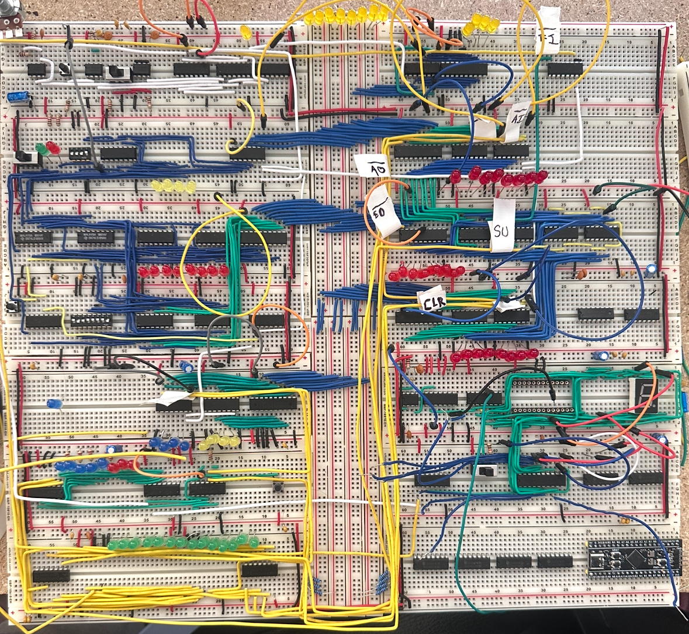
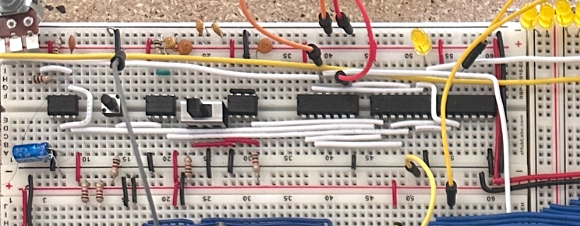
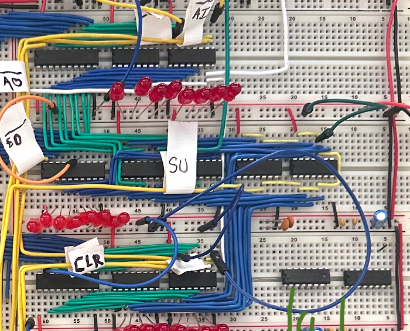
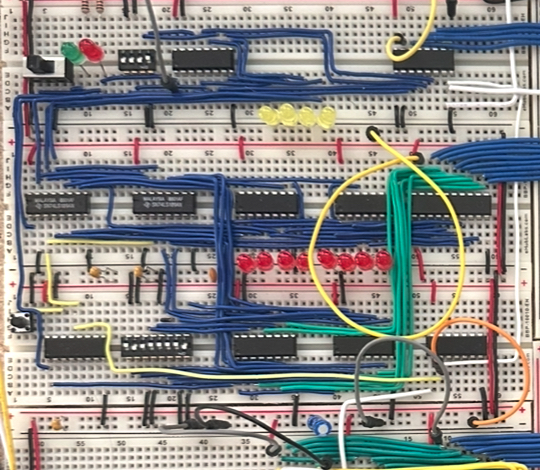
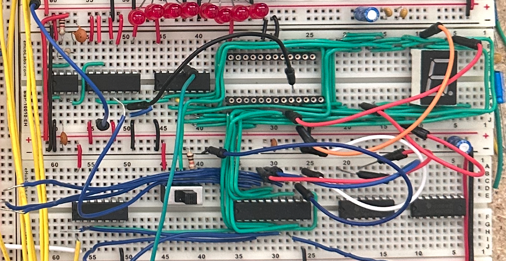
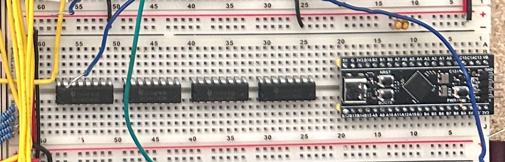

Execute a complete fetch-decode-execute cycle using real TTL logic, no FPGAs or simulation.
All instruction behavior defined by programmable ROM, allowing instruction set modification without hardware changes.
Monitor 71 internal signals simultaneously to observe bus state every clock cycle — the computer's own debugger.
Support single-step manual mode through full-speed operation, enabling step-by-step instruction tracing.
Complete schematics, firmware, BOM, and test procedures published openly for reproducibility.
Serve as a tangible demonstration of computer architecture concepts from the gate level up.
Team formed, SAP-1 architecture selected as base design. Ben Eater kit bundle ordered. Subsystem responsibilities assigned: Nix (clock/ALU), Adams (RAM/PC/enclosure), Segraves (control logic/EEPROM/visualizer).
All four base SAP-1 subsystems assembled on breadboards following Ben Eater's design. Clock module, ALU, registers, RAM, program counter, and output stage populated and wired.
AT28C16 EEPROMs programmed via T48 programmer. Display decoder binary generated in C and written to EEPROM. Microcode control words defined and verified. 7-segment output displaying decimal values confirmed.
STM32F411 firmware under active development. 74HC165 shift register chain assembled and SPI communication verified. TFT display driver integration in progress. 71-signal live display being finalized.
Full system integration across all subsystems. Instruction set verification, timing analysis, and end-to-end program execution testing.
Live demonstration of complete fetch-decode-execute cycle with real-time bus visualization. Final documentation, video walkthrough, and capstone presentation.






| Test | Method | Result |
|---|---|---|
| Clock module oscillation | Oscilloscope — verify square wave output at set frequency | PASS |
| Manual single-step mode | Step through clock pulses manually, verify bus transitions | PASS |
| ALU addition (A + B) | Load known values into A and B registers, verify sum on bus | PASS |
| ALU subtraction (A − B) | Verify two's complement subtraction and carry flag | PASS |
| RAM write / read | Manually program RAM, verify readback via data bus | PASS |
| Program counter increment | Step through clock cycles, verify PC increments 0→F | PASS |
| EEPROM display decoder | Drive known binary inputs, verify correct decimal on 7-seg | PASS |
| EEPROM microcode output | Step through instruction T-states, verify control word bits | PASS |
| 74HC165 SPI chain readback | Drive known signals, verify STM32 reads correct 72-bit word | IN PROGRESS |
| TFT display rendering | Verify live signal state display updates each clock cycle | IN PROGRESS |
| Full program execution | Load and run ADD/SUB program, verify correct output | IN PROGRESS |